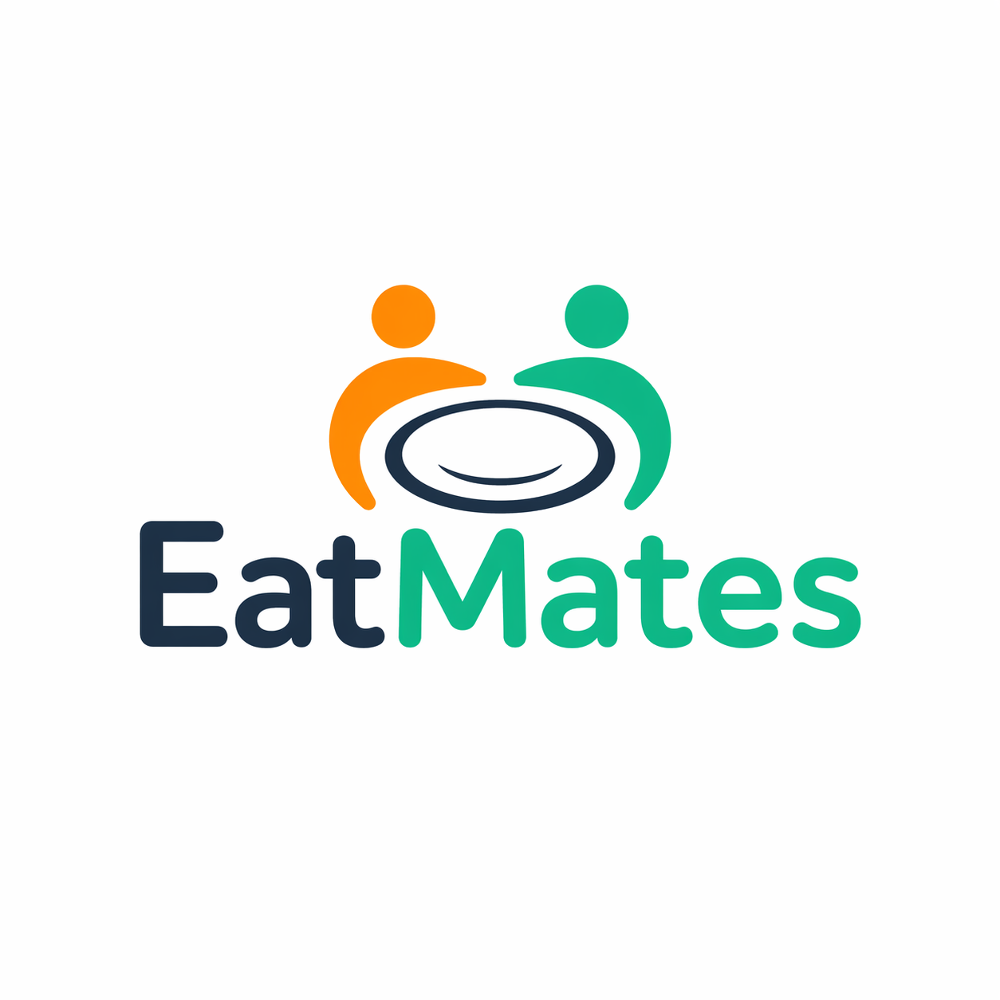
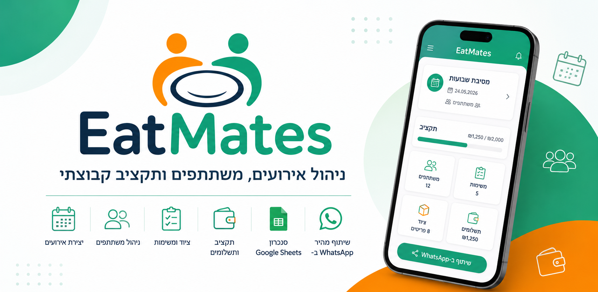

EatMates
מה EatMates עושה?
EatMates נועדה לעזור למשתמשים לנהל אירועים קבוצתיים בצורה פשוטה: מי מגיע, מה כל אחד מביא, כמה עלה, איך מתחלק התקציב, ומה הסיכום שניתן לשתף עם המשתתפים.
מדיניות פרטיות
EatMates היא אפליקציה לניהול אירועים קבוצתיים, משתתפים, ציוד, תשלומים ותקציב. אופן השמירה והחיבור תלוי בגרסת האפליקציה: בגרסאות המחוברות ל-Base44, נתוני האפליקציה נשמרים בשירות Base44 וניתן לחבר חשבון Google אישי בהגדרות לצורך סנכרון גיליונות. בגרסת Standalone, אירועים שלא שותפו נשמרים במכשיר; שיתוף בין מכשירים משתמש ב-Firebase Authentication וב-Cloud Firestore.
- בגרסת Standalone השיתוף משתמש בחשבון Firebase אנונימי המזהה את ההתקנה; החיבור ל-Google אינו נדרש לשיתוף זה.
- אירועים שפורסמו לשיתוף בגרסת Standalone, משתתפים ופריטים נשמרים ב-Cloud Firestore ונגישים למשתמשים שהצטרפו לאירוע.
- בגרסאות עם חיבור Google בהגדרות, החיבור מתבצע ביוזמת המשתמש לצורך יצירה ועדכון של Google Sheets בחשבון Google שלו. אפשר לנתק אותו בהגדרות.
- בגרסת Standalone ייצוא לגיליון מתבצע רק אם המשתמש מגדיר כתובת Google Apps Script; גרסה זו אינה מבקשת הרשאת Google Drive.
- האפליקציה אינה מוכרת מידע אישי ואינה משתפת מידע אישי לצורכי פרסום.
- האפליקציה אינה כוללת רכישות, שירותים פיננסיים, תוכן רפואי או הימורים.
איזה מידע עשוי להישמר?
- בגרסת Standalone, מזהה חשבון אנונימי של Firebase לצורך הרשאות לאירועים משותפים; ההתחברות הזו אינה מחייבת כתובת מייל.
- בגרסאות המחוברות ל-Base44 או ל-Google, פרטי חשבון כגון שם וכתובת מייל עשויים להישמר לצורך התחברות וחיבור השירותים.
- פרטי אירועים, כגון שם, מארגן, תאריך, שעה, מיקום, תיאור וקוד גישה.
- שמות משתתפים, מספרי טלפון והערות שהוזנו באירוע, וכן אישורי הגעה והעדפות שהוזנו.
- פריטים, ציוד, סכומים, תשלומים ונתוני תקציב שהמשתמשים הזינו.
- כתובת Web App של Google Apps Script שהמשתמש מזין, אם בחר להפעיל ייצוא לגיליון בדרך זו; בגרסאות עם חיבור Google עשויים להישמר גם מזהה וקישור לגיליון שנוצר.
לחיצה יזומה על שיתוף ב-WhatsApp או דרך אפשרויות השיתוף של המכשיר מעבירה את הטקסט שנבחר לאפליקציית השיתוף. טקסט זה עשוי לכלול פרטי אירוע, מארגן, קוד גישה או סיכום משתתפים.
שימוש אופציונלי ב-Google Sheets
בגרסאות הכוללות "חיבור Google Sheets אישי", המשתמש יכול לאשר חיבור של חשבון Google בהגדרות. החיבור מאפשר ל-EatMates ליצור גיליון בחשבון Google שלו ולעדכן בו פרטי אירועים, משתתפים ופריטים. פעולות אלו מבוצעות באמצעות שירות Base44 והחיבור ל-Google; הגיליון נשאר בחשבון המשתמש.
בגרסת Standalone, רק אם המשתמש מפעיל את האפשרות בהגדרות ומזין כתובת Web App, האפליקציה שולחת אליה נתוני אירוע, משתתפים ופריטים. יש לוודא שהכתובת והסקריפט שהוגדרו שייכים לגורם שהמשתמש סומך עליו.
ייצוא זה בגרסת Standalone הוא חד-כיווני: האפליקציה אינה קוראת נתונים בחזרה מהגיליון, אינה יוצרת גיליונות בחשבון Google ואינה מבקשת הרשאות ל-Google Drive.
שמירה ואבטחת מידע
בגרסת Standalone נתונים מקומיים נשמרים באחסון האפליקציה במכשיר, ונתוני אירועים משותפים נשמרים ב-Cloud Firestore. בגרסאות המחוברות ל-Base44 נתוני האירועים נשמרים בשירות זה. הנתונים נשמרים כל עוד האירוע או החשבון קיימים, או עד למחיקתם בהתאם לבקשה. קוד הגישה מאפשר הצטרפות לאירוע משותף, ולכן אין למסור אותו למי שאינו אמור לקבל גישה לפרטי האירוע.
שיתוף עם Firebase מתבצע באמצעות שירותי Firebase וההרשאות של האפליקציה. בייצוא ל-Web App חיצוני האבטחה והשמירה של העותק הנשלח תלויות בכתובת ובסקריפט שהמשתמש הגדיר; מומלץ להשתמש רק בכתובת HTTPS של גורם מהימן. נתונים מקומיים נשמרים עד למחיקתם באפליקציה או למחיקת נתוני האפליקציה מהמכשיר.
תנאי שימוש
השימוש באפליקציית EatMates נעשה באחריות המשתמש. מטרת האפליקציה היא לסייע בניהול אירועים קבוצתיים, משתתפים, פריטים, תשלומים וסיכומים.
- המשתמש אחראי להזין מידע נכון ומדויק באירועים שהוא יוצר או מנהל.
- המשתמש אחראי לקבל הסכמה ממשתתפים אם הוא מזין פרטים אישיים שלהם.
- EatMates אינה אחראית למחלוקות כספיות, חלוקת תשלומים או הסכמות בין משתתפים.
- שירותי Google ו-Firebase כפופים גם לתנאים ולמדיניות של Google.
- ייתכנו שינויים, שיפורים או הפסקות זמניות בשירות לצורך תחזוקה.
מחיקת חשבון ונתונים
ניתן לבקש מחיקת חשבון ונתונים המשויכים לאפליקציית EatMates. בגרסת Standalone ניתן לבחור "מחיקת חשבון ונתונים" בהגדרות. אפשר גם לשלוח בקשה חיצונית במייל דרך דף זה, ללא תשלום וללא צורך להתקין את האפליקציה מחדש. בקשות חיצוניות מטופלות באופן ידני.
לאחר קבלת הבקשה ואימות סביר של הנתונים הרלוונטיים, נתונים משויכים שניתן לזהות במערכות EatMates יימחקו תוך עד 30 ימים. לא ניתן למחוק מרחוק נתונים שנשמרו רק במכשיר; ניתן להסיר אותם דרך הגדרות האפליקציה או על ידי מחיקת נתוני האפליקציה מהמכשיר.
הנתונים הרלוונטיים למחיקה עשויים לכלול:
- חשבון Firebase האנונימי המשמש לשיתוף בגרסת Standalone, כאשר ניתן לזהותו.
- חשבון ונתוני אירועים בשירות Base44 בגרסאות המשתמשות בו, בהתאם לזיהוי החשבון והבקשה.
- אירועים משותפים שנוצרו על ידי המשתמש ונתוני המשתתפים והפריטים שלהם.
- רשומות שהמשתמש הוסיף לאירועים משותפים של אחרים, לאחר זיהוי הרשומות הרלוונטיות.
- העדפות מקומיות וכתובת הייצוא שנשמרו במכשיר, כאשר המחיקה מבוצעת מתוך האפליקציה.
חשוב לדעת לפני בקשת מחיקה
- חשבון Firebase אנונימי אינו כולל כתובת מייל של חשבון Google. בבקשה חיצונית ציינו פרטי אירוע או משתתף שהזנתם; אם השתמשתם בגרסה עם חשבון Google או Base44, ציינו גם את כתובת המייל של החשבון, כדי שנוכל לאתר את הנתונים ולבצע אימות מתאים.
- קובצי Google Sheets שנוצרו בחשבון Google של המשתמש אינם נמחקים אוטומטית עם מחיקת נתוני EatMates; אפשר למחוק אותם מתוך Google Drive. מידע שנשמר ב-Web App חיצוני שהמשתמש הגדיר מחייב פנייה למפעיל הגיליון או הסקריפט.
- אם שיתפתם פרטים דרך WhatsApp או אפליקציה אחרת, יש לטפל בעותקים שנשלחו בהתאם לכללי אותו שירות.
- לאחר השלמת מחיקת נתוני EatMates, לא ניתן יהיה לשחזר אותם.
אישור בקשת מחיקה
האם אתה בטוח שברצונך לבקש מחיקת חשבון ונתוני EatMates?
לאחר לחיצה על אישור, תיפתח טיוטת מייל. יש למלא פרטים מזהים ולשלוח אותה בפועל. אם אפליקציית מייל לא נפתחת, ניתן לכתוב ישירות אל djmotti@gmail.com. אל תשלחו סיסמאות או מידע אישי שאינו נחוץ לאיתור הבקשה.
הצהרת נגישות
EatMates שואפת לספק חוויית שימוש נגישה, ברורה ונוחה ככל האפשר. בעמוד זה שולבו התאמות בסיסיות כגון ניווט מקלדת, קישור דילוג לתוכן, ניגודיות גבוהה, הגדלת טקסט, הדגשת קישורים ועצירת אנימציות.
אם נתקלת בקושי נגישות או בבעיה בשימוש בעמוד, ניתן לפנות אלינו במייל: djmotti@gmail.com
יצירת קשר
לכל שאלה בנושא פרטיות, מחיקת חשבון, נגישות או שימוש בנתונים ניתן לפנות אל:
djmotti@gmail.com
עדכון אחרון: 02.10.2026